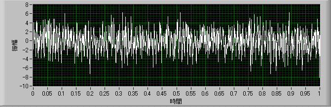
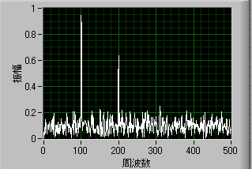
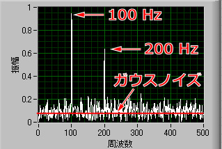
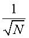

加算平均
ではまず，波形を用意しましょう．

この条件は，
サンプリング周波数： 1kHz
サンプル数： 1024
正弦波１：周波数200Hz，振幅1.0
正弦波２：周波数100Hz，振幅1.5
ノイズ： ガウスノイズ，標準偏差2.0
の合成波です.
なんとなくサイン波見たいのが見えるような見えないような．．
この波形をフーリエ変換にかけると，

となり，きれいに，１００，２００Hzのところにピークが見えます．
ここで，以前の波形とは違うのが，ベースが上がっているところ．
これは，ノイズを加えたために全体的にベースが上がってるのです．
ここで得られる情報は，

この三点，
１００Hzのピーク
２００Hzのピーク
ガウスノイズの大きさ
です．
注意しなくてはならないことは，ガウスノイズの大きさは，赤い線の高さのみなのです．
それ以外のギザギザは計算上のノイズ，ノイズのノイズ，なのです．
まだ，この波形はノイズに比べて，シグナルが大きいので，あまりこの，ノイズのノイズ，は気になりません．
しかし，もっとシグナルが小さくなった場合，シグナルがこのノイズのノイズに埋もれてしまう恐れがあります．
下の図をご覧ください．
これは左記の条件から，
ガウスノイズの標準偏差：2.0→5.0
にノイズ成分を増やしたものです．
１００Hzはまだ認識できますが，２００Hzはもう埋もれてしまっています．
往々にして，実験ではこのようなことは多いのです．
この，ノイズのノイズ，を減少させるのが加算平均です．
ここで，シグナルと，ノイズの違いを考えましょう．
ランダムなノイズの場合，ノイズの形は刻々と変化します．
しかし，シグナルは定常的に発生しています．
つまり，ノイズの形は常に同じではないのです．
ですので，ノイズを加算平均していけば，ノイズのノイズ成分はどんどん減少していきます．
その減少具合は，

で減少します．
N，は加算平均の回数です．